Project toevoegen, begrijpen en inrichten
STATISCH ONTWERP · synthetische voorbeelden · geen geleverde onboarding, live scan of bediening.
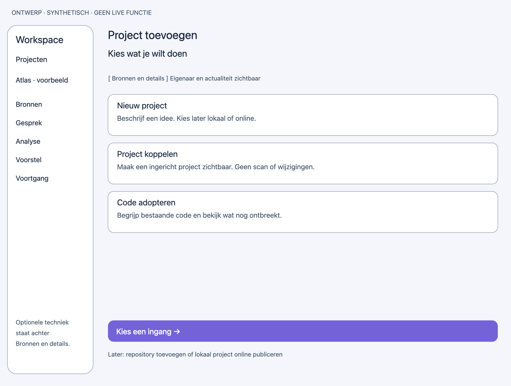
Project toevoegen — light — ontwerpcanvas 1240×940. Lees de schermcontracten voor states en effecten.Tekst van dit ontwerpbeeld
- ONTWERP · SYNTHETISCH · GEEN LIVE FUNCTIE
- Workspace
- Projecten
- Atlas · voorbeeld
- Bronnen
- Gesprek
- Analyse
- Voorstel
- Voortgang
- Optionele techniek
- staat achter
- Bronnen en details.
- Project toevoegen
- Kies wat je wilt doen
- [ Bronnen en details ] Eigenaar en actualiteit zichtbaar
- Nieuw project
- Beschrijf een idee. Kies later lokaal of online.
- Project koppelen
- Maak een ingericht project zichtbaar. Geen scan of wijzigingen.
- Code adopteren
- Begrijp bestaande code en bekijk wat nog ontbreekt.
- Kies een ingang →
- Later: repository toevoegen of lokaal project online publiceren
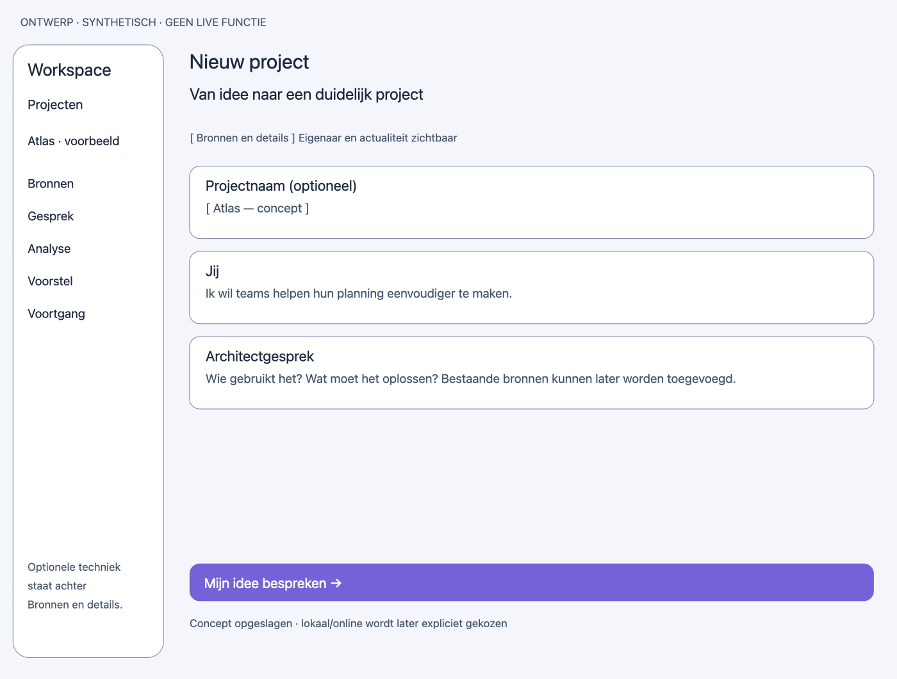
Nieuw project — light — ontwerpcanvas 1240×940. Lees de schermcontracten voor states en effecten.Tekst van dit ontwerpbeeld
- ONTWERP · SYNTHETISCH · GEEN LIVE FUNCTIE
- Workspace
- Projecten
- Atlas · voorbeeld
- Bronnen
- Gesprek
- Analyse
- Voorstel
- Voortgang
- Optionele techniek
- staat achter
- Bronnen en details.
- Nieuw project
- Van idee naar een duidelijk project
- [ Bronnen en details ] Eigenaar en actualiteit zichtbaar
- Projectnaam (optioneel)
- [ Atlas — concept ]
- Jij
- Ik wil teams helpen hun planning eenvoudiger te maken.
- Architectgesprek
- Wie gebruikt het? Wat moet het oplossen? Bestaande bronnen kunnen later worden toegevoegd.
- Mijn idee bespreken →
- Concept opgeslagen · lokaal/online wordt later expliciet gekozen
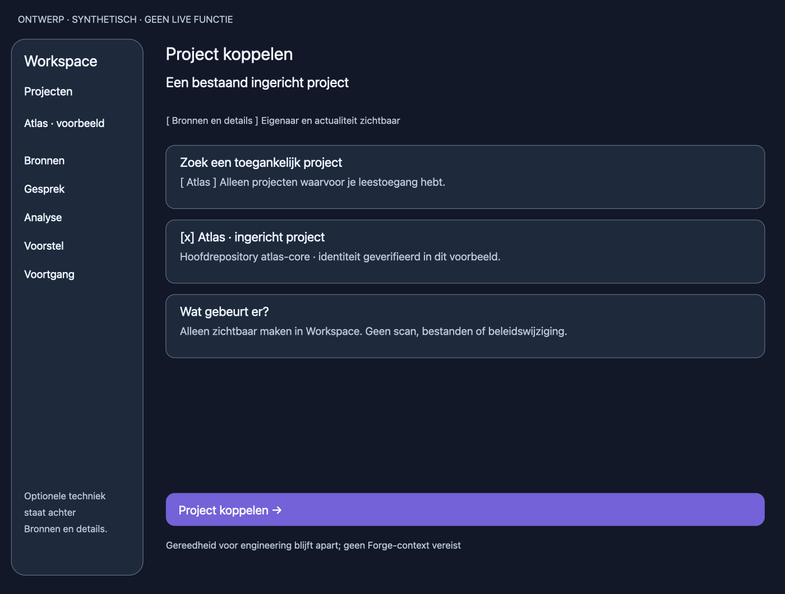
Project koppelen — dark — ontwerpcanvas 1240×940. Lees de schermcontracten voor states en effecten.Tekst van dit ontwerpbeeld
- ONTWERP · SYNTHETISCH · GEEN LIVE FUNCTIE
- Workspace
- Projecten
- Atlas · voorbeeld
- Bronnen
- Gesprek
- Analyse
- Voorstel
- Voortgang
- Optionele techniek
- staat achter
- Bronnen en details.
- Project koppelen
- Een bestaand ingericht project
- [ Bronnen en details ] Eigenaar en actualiteit zichtbaar
- Zoek een toegankelijk project
- [ Atlas ] Alleen projecten waarvoor je leestoegang hebt.
- [x] Atlas · ingericht project
- Hoofdrepository atlas-core · identiteit geverifieerd in dit voorbeeld.
- Wat gebeurt er?
- Alleen zichtbaar maken in Workspace. Geen scan, bestanden of beleidswijziging.
- Project koppelen →
- Gereedheid voor engineering blijft apart; geen Forge-context vereist
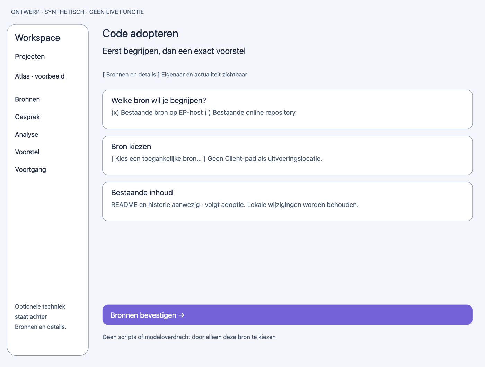
Code adopteren — light — ontwerpcanvas 1240×940. Lees de schermcontracten voor states en effecten.Tekst van dit ontwerpbeeld
- ONTWERP · SYNTHETISCH · GEEN LIVE FUNCTIE
- Workspace
- Projecten
- Atlas · voorbeeld
- Bronnen
- Gesprek
- Analyse
- Voorstel
- Voortgang
- Optionele techniek
- staat achter
- Bronnen en details.
- Code adopteren
- Eerst begrijpen, dan een exact voorstel
- [ Bronnen en details ] Eigenaar en actualiteit zichtbaar
- Welke bron wil je begrijpen?
- (x) Bestaande bron op EP-host ( ) Bestaande online repository
- Bron kiezen
- [ Kies een toegankelijke bron… ] Geen Client-pad als uitvoeringslocatie.
- Bestaande inhoud
- README en historie aanwezig · volgt adoptie. Lokale wijzigingen worden behouden.
- Bronnen bevestigen →
- Geen scripts of modeloverdracht door alleen deze bron te kiezen
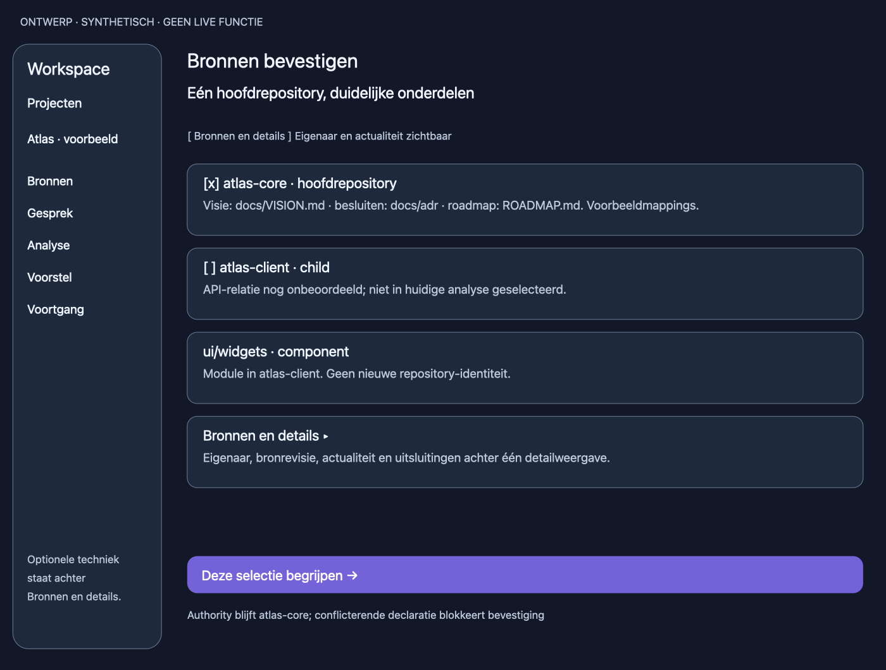
Bronnen bevestigen — dark — ontwerpcanvas 1240×940. Lees de schermcontracten voor states en effecten.Tekst van dit ontwerpbeeld
- ONTWERP · SYNTHETISCH · GEEN LIVE FUNCTIE
- Workspace
- Projecten
- Atlas · voorbeeld
- Bronnen
- Gesprek
- Analyse
- Voorstel
- Voortgang
- Optionele techniek
- staat achter
- Bronnen en details.
- Bronnen bevestigen
- Eén hoofdrepository, duidelijke onderdelen
- [ Bronnen en details ] Eigenaar en actualiteit zichtbaar
- [x] atlas-core · hoofdrepository
- Visie: docs/VISION.md · besluiten: docs/adr · roadmap: ROADMAP.md. Voorbeeldmappings.
- [ ] atlas-client · child
- API-relatie nog onbeoordeeld; niet in huidige analyse geselecteerd.
- ui/widgets · component
- Module in atlas-client. Geen nieuwe repository-identiteit.
- Bronnen en details ▸
- Eigenaar, bronrevisie, actualiteit en uitsluitingen achter één detailweergave.
- Deze selectie begrijpen →
- Authority blijft atlas-core; conflicterende declaratie blokkeert bevestiging
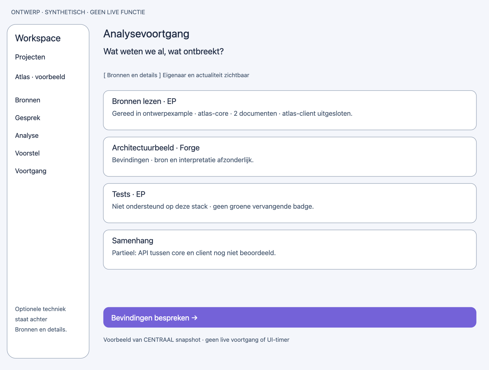
Analysevoortgang — light — ontwerpcanvas 1240×940. Lees de schermcontracten voor states en effecten.Tekst van dit ontwerpbeeld
- ONTWERP · SYNTHETISCH · GEEN LIVE FUNCTIE
- Workspace
- Projecten
- Atlas · voorbeeld
- Bronnen
- Gesprek
- Analyse
- Voorstel
- Voortgang
- Optionele techniek
- staat achter
- Bronnen en details.
- Analysevoortgang
- Wat weten we al, wat ontbreekt?
- [ Bronnen en details ] Eigenaar en actualiteit zichtbaar
- Bronnen lezen · EP
- Gereed in ontwerpexample · atlas-core · 2 documenten · atlas-client uitgesloten.
- Architectuurbeeld · Forge
- Bevindingen · bron en interpretatie afzonderlijk.
- Tests · EP
- Niet ondersteund op deze stack · geen groene vervangende badge.
- Samenhang
- Partieel: API tussen core en client nog niet beoordeeld.
- Bevindingen bespreken →
- Voorbeeld van CENTRAAL snapshot · geen live voortgang of UI-timer
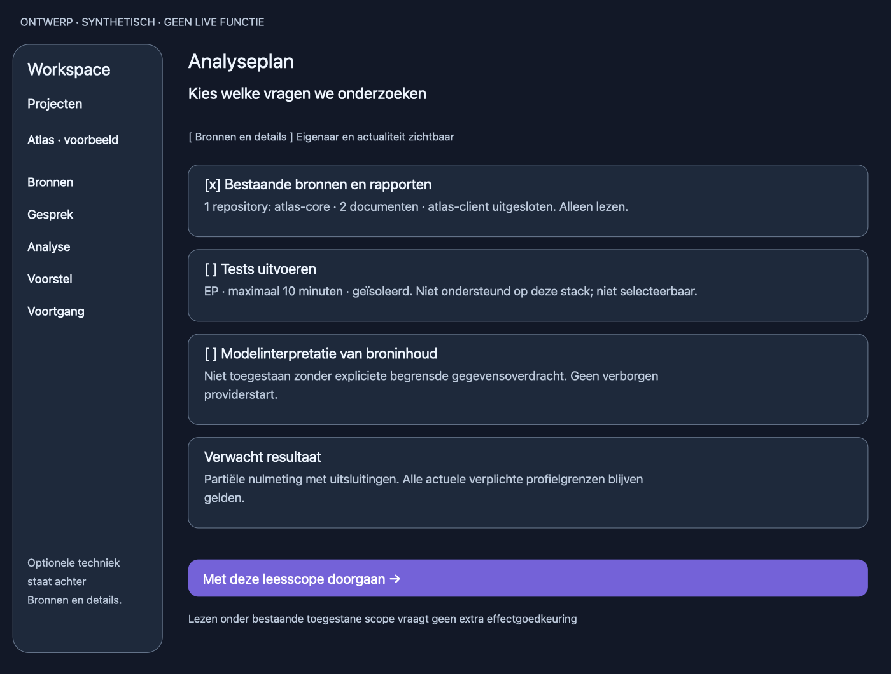
Analyseplan — dark — ontwerpcanvas 1240×940. Lees de schermcontracten voor states en effecten.Tekst van dit ontwerpbeeld
- ONTWERP · SYNTHETISCH · GEEN LIVE FUNCTIE
- Workspace
- Projecten
- Atlas · voorbeeld
- Bronnen
- Gesprek
- Analyse
- Voorstel
- Voortgang
- Optionele techniek
- staat achter
- Bronnen en details.
- Analyseplan
- Kies welke vragen we onderzoeken
- [ Bronnen en details ] Eigenaar en actualiteit zichtbaar
- [x] Bestaande bronnen en rapporten
- 1 repository: atlas-core · 2 documenten · atlas-client uitgesloten. Alleen lezen.
- [ ] Tests uitvoeren
- EP · maximaal 10 minuten · geïsoleerd. Niet ondersteund op deze stack; niet selecteerbaar.
- [ ] Modelinterpretatie van broninhoud
- Niet toegestaan zonder expliciete begrensde gegevensoverdracht. Geen verborgen
- providerstart.
- Verwacht resultaat
- Partiële nulmeting met uitsluitingen. Alle actuele verplichte profielgrenzen blijven
- gelden.
- Met deze leesscope doorgaan →
- Lezen onder bestaande toegestane scope vraagt geen extra effectgoedkeuring
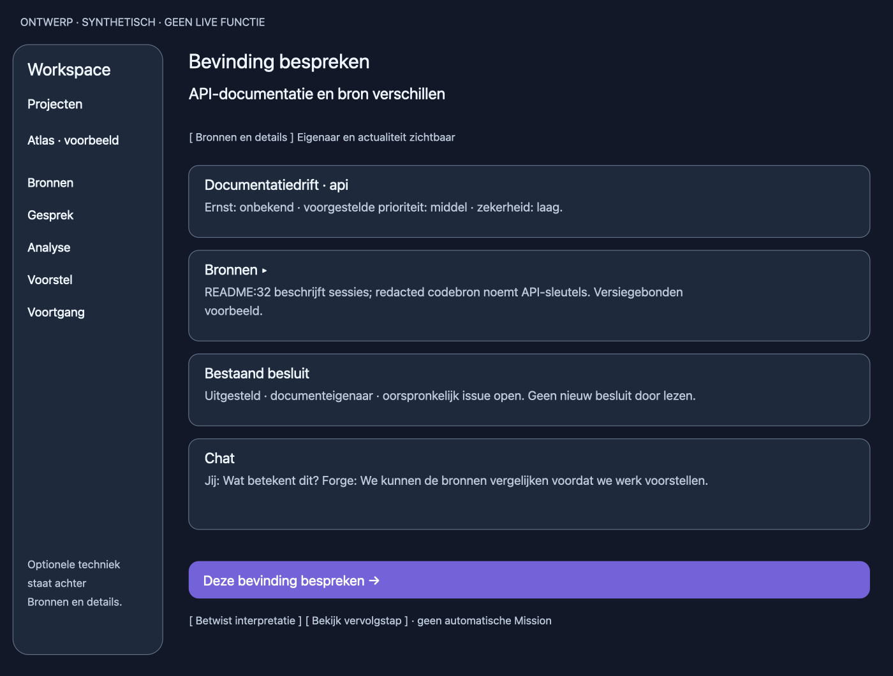
Bevinding bespreken — dark — ontwerpcanvas 1240×940. Lees de schermcontracten voor states en effecten.Tekst van dit ontwerpbeeld
- ONTWERP · SYNTHETISCH · GEEN LIVE FUNCTIE
- Workspace
- Projecten
- Atlas · voorbeeld
- Bronnen
- Gesprek
- Analyse
- Voorstel
- Voortgang
- Optionele techniek
- staat achter
- Bronnen en details.
- Bevinding bespreken
- API-documentatie en bron verschillen
- [ Bronnen en details ] Eigenaar en actualiteit zichtbaar
- Documentatiedrift · api
- Ernst: onbekend · voorgestelde prioriteit: middel · zekerheid: laag.
- Bronnen ▸
- README:32 beschrijft sessies; redacted codebron noemt API-sleutels. Versiegebonden
- voorbeeld.
- Bestaand besluit
- Uitgesteld · documenteigenaar · oorspronkelijk issue open. Geen nieuw besluit door lezen.
- Chat
- Jij: Wat betekent dit? Forge: We kunnen de bronnen vergelijken voordat we werk voorstellen.
- Deze bevinding bespreken →
- [ Betwist interpretatie ] [ Bekijk vervolgstap ] · geen automatische Mission
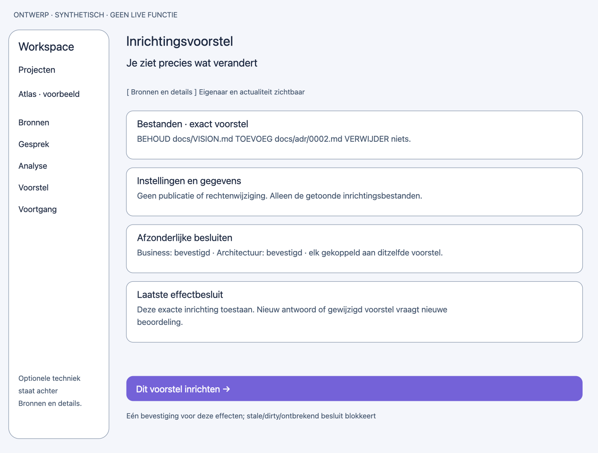
Inrichtingsvoorstel — light — ontwerpcanvas 1240×940. Lees de schermcontracten voor states en effecten.Tekst van dit ontwerpbeeld
- ONTWERP · SYNTHETISCH · GEEN LIVE FUNCTIE
- Workspace
- Projecten
- Atlas · voorbeeld
- Bronnen
- Gesprek
- Analyse
- Voorstel
- Voortgang
- Optionele techniek
- staat achter
- Bronnen en details.
- Inrichtingsvoorstel
- Je ziet precies wat verandert
- [ Bronnen en details ] Eigenaar en actualiteit zichtbaar
- Bestanden · exact voorstel
- BEHOUD docs/VISION.md TOEVOEG docs/adr/0002.md VERWIJDER niets.
- Instellingen en gegevens
- Geen publicatie of rechtenwijziging. Alleen de getoonde inrichtingsbestanden.
- Afzonderlijke besluiten
- Business: bevestigd · Architectuur: bevestigd · elk gekoppeld aan ditzelfde voorstel.
- Laatste effectbesluit
- Deze exacte inrichting toestaan. Nieuw antwoord of gewijzigd voorstel vraagt nieuwe
- beoordeling.
- Dit voorstel inrichten →
- Eén bevestiging voor deze effecten; stale/dirty/ontbrekend besluit blokkeert
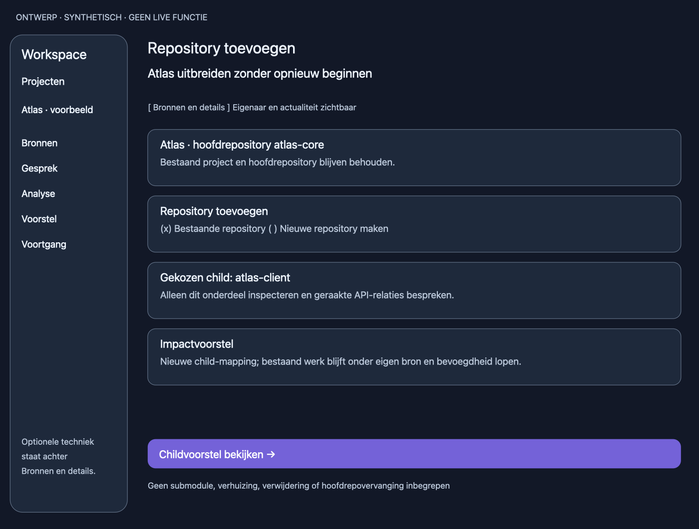
Repository toevoegen — dark — ontwerpcanvas 1240×940. Lees de schermcontracten voor states en effecten.Tekst van dit ontwerpbeeld
- ONTWERP · SYNTHETISCH · GEEN LIVE FUNCTIE
- Workspace
- Projecten
- Atlas · voorbeeld
- Bronnen
- Gesprek
- Analyse
- Voorstel
- Voortgang
- Optionele techniek
- staat achter
- Bronnen en details.
- Repository toevoegen
- Atlas uitbreiden zonder opnieuw beginnen
- [ Bronnen en details ] Eigenaar en actualiteit zichtbaar
- Atlas · hoofdrepository atlas-core
- Bestaand project en hoofdrepository blijven behouden.
- Repository toevoegen
- (x) Bestaande repository ( ) Nieuwe repository maken
- Gekozen child: atlas-client
- Alleen dit onderdeel inspecteren en geraakte API-relaties bespreken.
- Impactvoorstel
- Nieuwe child-mapping; bestaand werk blijft onder eigen bron en bevoegdheid lopen.
- Childvoorstel bekijken →
- Geen submodule, verhuizing, verwijdering of hoofdrepovervanging inbegrepen
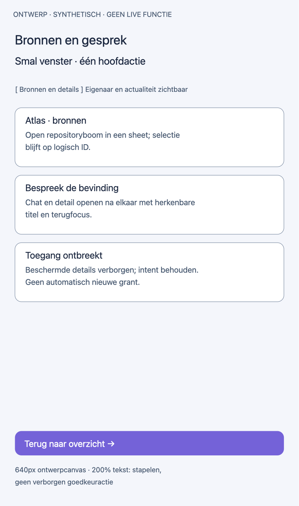
Bronnen en gesprek — light — ontwerpcanvas 640×1080. Lees de schermcontracten voor states en effecten.Tekst van dit ontwerpbeeld
- ONTWERP · SYNTHETISCH · GEEN LIVE FUNCTIE
- Bronnen en gesprek
- Smal venster · één hoofdactie
- [ Bronnen en details ] Eigenaar en actualiteit zichtbaar
- Atlas · bronnen
- Open repositoryboom in een sheet; selectie
- blijft op logisch ID.
- Bespreek de bevinding
- Chat en detail openen na elkaar met herkenbare
- titel en terugfocus.
- Toegang ontbreekt
- Beschermde details verborgen; intent behouden.
- Geen automatisch nieuwe grant.
- Terug naar overzicht →
- 640px ontwerpcanvas · 200% tekst: stapelen,
- geen verborgen goedkeuractie